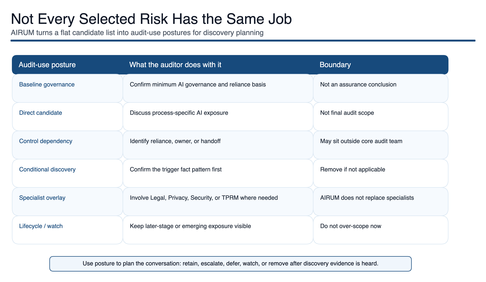

Assurance Boundary
No private audit material. AIRUM is a pre-discovery preparation aid. It does not provide legal advice, does not provide audit assurance, does not provide source-perfect validation, and does not provide final workpapers. The public demo uses disclosure-safe source labels and summaries, does not publish the full AIRUM methodology, and does not publish internal source evidence, licensed-source locators, local vault paths, or private source-to-control rationale.
What AIRUM is
AIRUM stands for AI Risk Universe Matrix. It has two connected purposes. First, it is a curated AI Risk Universe for exploration, education, methodology development, and risk-based AI audit planning. The internal working universe is source-backed, meaning internal AIRUM retains provenance support without making this public demo source-perfect, and is organized across seven families: strategy and value management, organization and culture, governance and risk, data management, engineering and lifecycle, security and malicious use, and societal and ethical impact.
Second, AIRUM is a deterministic Risk Scoping layer. It turns structured audit context into a reviewable pre-discovery preparation pack: candidate AI risks, baseline governance checks, process-specific considerations, expected controls, discovery questions, lifecycle assumptions, and specialist dependencies.
The goal is not to automate audit judgment. The goal is to make the first version of the audit conversation stronger, more traceable, and easier to challenge.
Methodology at a glance
AIRUM combines two ways of building an AI risk universe.
One path starts from known AI failure modes: documented threats, vulnerabilities, and incidents are grouped into audit-relevant AI Risk families.
The second path works backwards from controls and governance expectations: if a standard, maturity model, or guidance document requires a control, AIRUM asks what risk would materialize if that control were missing or weak.
This dual-path approach helps AIRUM connect technical AI risks, governance expectations, organizational maturity, and audit discovery needs. The public demo shows the shape of the method without publishing the full 67-risk AIRUM v3.2 data core, 75 consolidated controls, 212 risk-control mappings, internal source labels/rationale, scoring logic, or internal rules.

The problem
AI can sit inside models, vendor platforms, business processes, spreadsheet workflows, research activities, customer-facing tools, or informal productivity shortcuts. Audit teams can scope too narrowly and miss how AI is used, or scope too broadly and create noise.
The method
AIRUM keeps the risk universe broad enough to avoid blind spots, then applies structured scoping so auditors can focus on the risks, controls, questions, and dependencies that matter for the audit context.
1. Start with context
Define the process, AI use, lifecycle stage, data dependency, vendor role, governance maturity, and specialist overlays.
2. Map likely risks
Connect context to the AI Risk Universe, expected controls, discovery questions, and dependencies.
3. Group by audit use
Separate baseline governance topics, direct candidates, specialist dependencies, lifecycle items, and watch items.
4. Challenge the output
Keep, amend, escalate, defer, or remove risks based on discovery evidence, legal/compliance review where relevant, and auditor judgment.
Why deterministic scoping matters
AIRUM's current Risk Scoping approach is deterministic by design. For early audit planning, a black-box answer is not enough: the auditor needs to inspect why a risk appeared and decide whether it is a baseline governance topic, process-specific candidate risk, specialist dependency, lifecycle consideration, or conditional item.
AI or probabilistic methods may later support summarization, enrichment, or adjacent-risk suggestions. They should not replace the audit judgment layer. Determinism protects traceability and keeps the auditor in control.
How an auditor would use it
AIRUM is used before discovery, not after the conclusion has already formed. The preparation pack helps the team walk into the first discussion with better assumptions to test.
- Where is AI used or planned?
- Is it internally developed, vendor-provided, embedded in a platform, or informally adopted by users?
- What data is used, who owns it, and which controls are expected?
- Which risks are directly in scope, and which are dependencies or specialist topics?
- What should be retained, escalated, deferred, or removed after the auditee explains the actual process?
Challenge this output
Use AIRUM output as a challengeable starting point. For each candidate risk, ask why it appears, which assumption caused it, what evidence would remove it, what evidence would escalate it, whether a specialist or legal/compliance review is needed, and which disclosure-safe source family supports the expected control.

Teaching, Internal Audit, and research use
AIRUM can support teaching in IT audit, AI governance, digital trust, risk management, responsible AI, and applied information systems. Students can work from a short AI use case, review a candidate risk shortlist, challenge unsupported assumptions, and draft discovery questions.
For Internal Audit organizations, AIRUM is a commercial collaboration concept for preparing AI audit discovery, challenging scope assumptions, and structuring early auditee conversations before formal fieldwork starts.
Research use could compare expert manual scoping with structured AIRUM-supported scoping, test risk coverage and rationale quality, study AI risk-to-audit-universe mapping, evaluate deterministic methods against LLM-assisted enrichment, or assess whether students and auditors better detect weak evidence after using the case.
Collaboration interest
AIRUM is aimed at Internal Audit teams looking for a more disciplined way to prepare AI risk discovery, universities and researchers interested in empirical validation of AI risk-to-audit-universe mapping, and event or conference organizers looking for practitioner-led material on AI risk, audit methodology, and digital trust.
Example export
A fictional, ten-risk selection sample uses the same 10 risks as the Explore page and shows how AIRUM can move from broad AI risk coverage to a concrete pre-discovery working paper. It includes selected candidate AI Risks, why each risk appears, expected controls, discovery questions, and evidence to request.
The sample is deliberately reduced. It demonstrates the output shape without publishing the full working method, internal scoring, source mappings, or private audit material.
Boundary
AIRUM is a working preparation concept and methodology prototype. The public demo uses disclosure-safe summaries only; it does not publish internal source captures, local vault paths, licensed-source locators, detailed source-to-control rationale, or private extraction trails. AIRUM does not decide final audit scope, assess control effectiveness, calculate residual risk, provide legal or compliance conclusions without legal/compliance review, validate that an AI system is safe, fair, secure, compliant, or well governed, verify every source and control rationale end-to-end for public release, or provide final audit workpapers without engagement-specific tailoring.
This public version is intentionally reduced. It does not publish the full working implementation, internal rules, scoring logic, data mappings, private audit material, or complete methodology package.